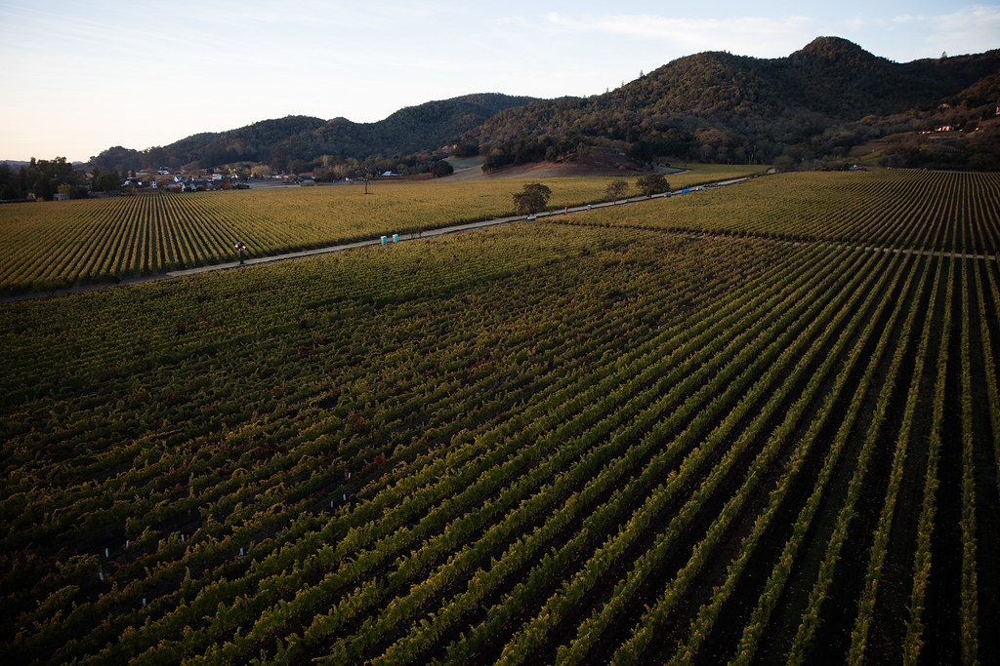
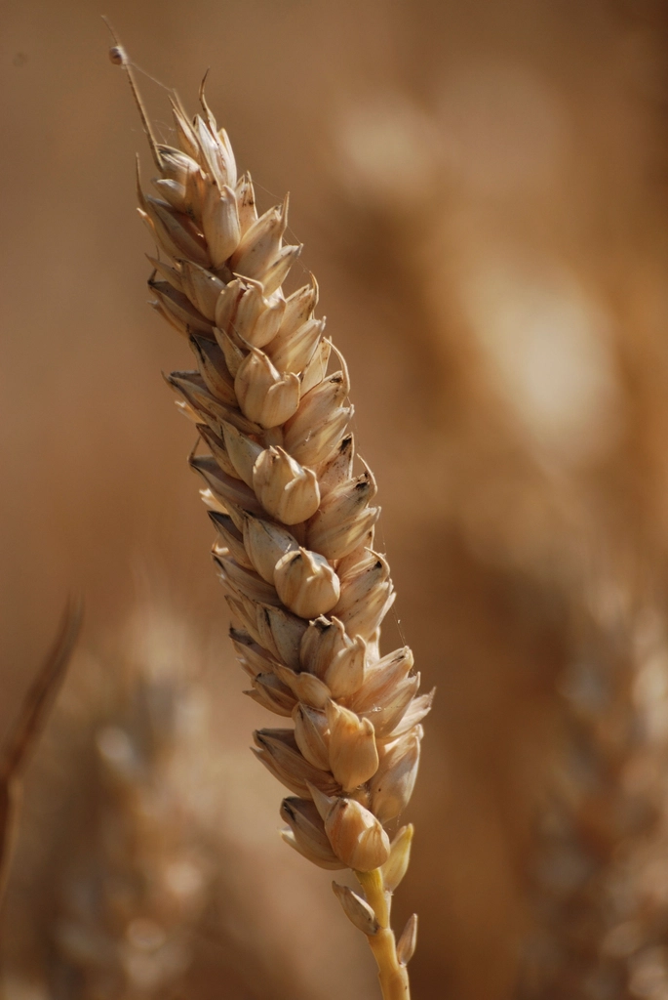

A field-level transition programme, built for working farms
Healthy Hectare is led by UnPoison in collaboration with aligned scientific, agricultural, and research partners.
Transition as a designed, tested, measured process
Healthy Hectare works with commercial farms to design, test, and refine practical transition pathways away from highly hazardous pesticides and toward safer biological and regenerative alternatives. The programme combines on-farm implementation with monitoring, interpretation, and reporting — so that transition can be measured, compared, and documented over time.
The model is built around a defined parcel of land that is small enough not to pose unacceptable economic risk to the farm, but large enough to validate a real transition pathway. It focuses on commercial and commodity crops that currently rely on HHPs, and measures performance on the same farm so that transition and conventional practice can be compared on a like-for-like basis.


Practical outcomes, not theory
Healthy Hectare helps farms:
- reduce dependence on highly hazardous pesticides
- lower overall chemical input burden
- decrease input costs comparatively over time
- maintain or improve yield and quality
- improve soil function and resilience
- reduce residues on produce
- generate credible evidence that can support future market, research, and regulatory engagement
Commercially credible from the outset
Manageable risk
The transition area is limited to a parcel that is manageable in risk terms for the farm business.
Real validation
The parcel is still large enough to test and validate a real crop transition pathway under working conditions.
Like-for-like evidence
The comparison happens on the same farm — same soil, same climate, same management context.
Material relevance
The focus stays on commercial and commodity crop systems where HHP dependence is materially relevant.
The work produces transition pathways that can guide the wider sector — not only one farm.
A practical, phased model
-
Identify the parcel
Identify an appropriate pilot block or parcel on the farm.
-
Establish the baseline
Establish baseline conditions and key constraints before transition begins.
-
Design the pathway
Develop a context-specific transition plan aligned with farm and crop realities.
-
Support implementation
Support implementation through agronomic guidance and close monitoring.
-
Track what matters
Track results across soil health, plant performance, inputs, quality, and residues.
-
Turn results into evidence
Translate findings into usable evidence, reporting, and wider learning.
The aim is not a one-off trial, but a benchmark transition model that can be refined, demonstrated, and replicated.
Healthy Hectare runs on a four-year cycle — enough time to establish a reliable baseline, implement transition adjustments over multiple seasons, compare outcomes like for like, document what is stable, what improves, and what needs refinement, and produce research-backed crop transition pathways that can inform the sector.
One programme, four needs connected
Healthy Hectare is valuable because it connects several needs that are usually treated separately. By linking implementation, monitoring, and interpretation, it turns farm transition into credible evidence that others can use.
For farms
A practical transition pathway with expert support and a crop safety net.
For researchers
A live evidence environment on a working commercial farm.
For sector bodies & regulators
A stronger basis for guidance, engagement, and replication.
For funders & partners
A measurable programme grounded in implementation, not theory.